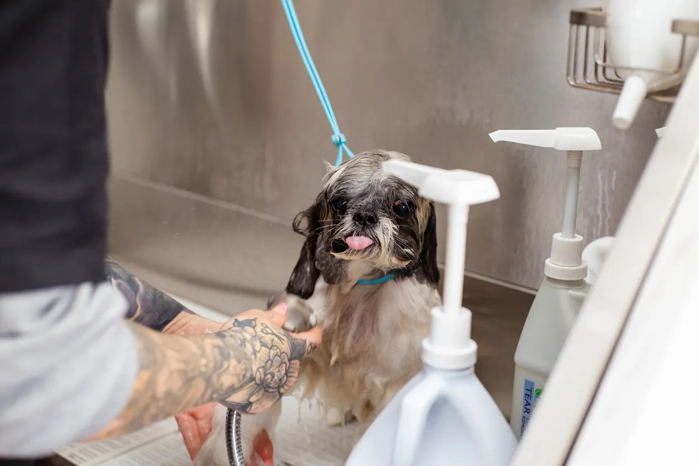
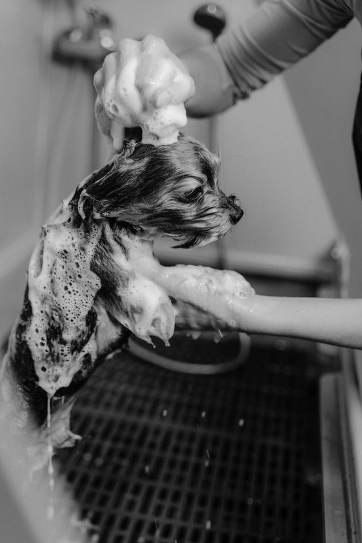
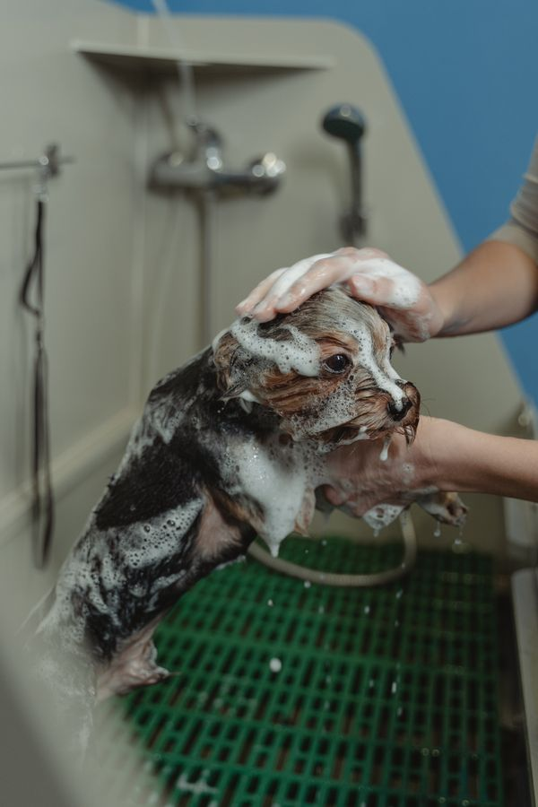

St. Louis, Missouri
Marys Pet Grooming sits at 3551 Brannon Ave in St. Louis. Neighbors bring their pets back again and again for grooming, and the reviews say why: friendly, professional service at reasonable prices.


Stock photo Bath time at the tub.
Why neighbors choose Marys
Rated 5.0 from 18 Google reviews.

Stock photo A sudsy scrub in the wash.
Visit
3551 Brannon Ave
St. Louis, MO
Wed to Sat: 8:30 AM to 6:00 PM
Sun, Mon, Tue: hours not listed, call to confirm
Call the shop to set up an appointment. It is the fastest way to reach Marys.